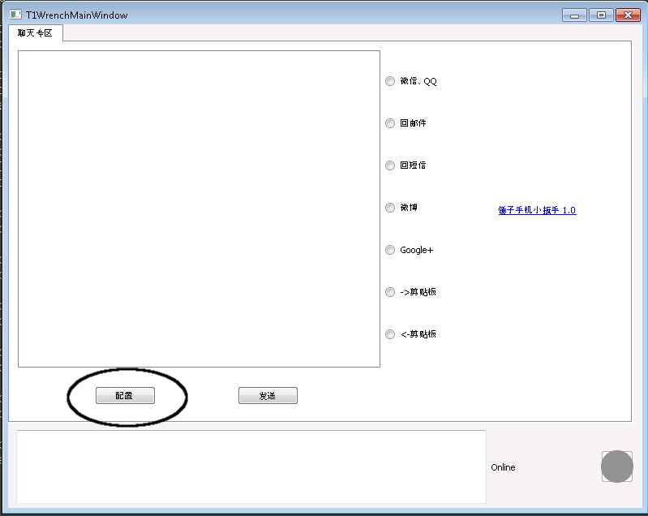

Smartisan T1小扳手使用指南
Table of Contents
1 适用PC系统要求
目前只支持64位的Windows 7以上的系统。
2 安装adb驱动
Smartisa T1的adb驱动安装有两种方法。
- 装豌豆荚，会自动安装adb驱动
- 用本软件自带的adb_usb_driver_smartisan下的驱动。
3 安装VC2013发布包
点击安装自带的 ./vcredist-vs2013-x86_64.exe 程序。也可以去微软网站下载： http://www.microsoft.com/en-gb/download/details.aspx?id=40784 选那个64 位的版本，因为我们的小扳手只支持64位的。
4 配置手机
在打开本软件 T1Wrench.exe 后，第一次运行需点一下左下角的配置按钮。见图：

- 此操作会在之前安装完adb驱动的基础上，确保adb devices命令能看到T1手 机（具体点说，是会往 %profile%/.android/adb_usb.ini 下写入T1的usb厂 商id 0x29a9）。
- 会向手机中自动安装SetClip.apk，一个操作手机剪贴板的程序。
- 会获取手机的屏幕大小。这在配合小扳手使用其他手机比如小米的情况下才需要。
5 发送微信、微博
在文本框中输入，然后点击发送。下一个版本会增加一个Ctrl+Enter的快捷键，这个版本就这样了，我要快点发布:-)
6 适配其他手机
需要自己获取每个点的座标。但我曾用同事的小米2手机只需一个简单的修改即可使用：
把emacs-weixin.sh中的每个座标按比例缩放一下，X = X / 1080 * 720；Y = Y / 1920 * 1280，这是因为T1的屏幕大小是1080x1920，而小米的大小则是 720x1280。但也有一些手机是例外的，比如我的Galaxy Nexus（谷哥三儿子）， 它的屏幕大小与小米2一样，但是一部分屏幕空间分给了三个虚拟按键。另外， 换了一个输入法布局也会导致这些座标发生变化！这种情况只能自己再去适配了。 话说有了T1小扳手，你还需要折腾手机上的输入法么？随便装一个就好了:-)
适配座标的方法是打开开发者选项里的显示触摸操作和指针位置两个选项，然后 在微信等应用中实际操作一遍，记下每个操作点按的位置的座标。有点麻烦的。 见图（有点大，建议右键->显示图片）：